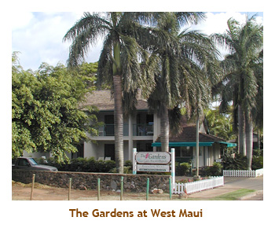

[ Home ] [ Travel ] [ Photography ] [ Pets ] [ Games] [ Rowing] [ Physics ]


Two Wonderful Weeks on Maui
Travel
Cruises
Past Cruises (Diaries)
Future Cruises
Rogues Galleries
Land Trips
Diaries (Land Trips)
Hawai'i - Big Island - 04'01
Hawai'i - Maui - 05'02
Hawai'i - Big Island - 04'03
Hawai'i - Kaua'i - 09'04
Hawai'i - Big Island - 04'06
Hawai'i - Maui - 04'06
Mainland China - 05'07
Phoenix, Arizona - 12'07
Greek Isles - 05'08
Hawai'i - Kaua'i - 09'08
Hawai'i - Big Island - 09'09
Hawai'i - Maui - 05'12
Hawai'i - Big Island - 04'13
Ireland - 08'13
Mexico - Cancun 11'13
France/Belgium/Lux 07'15
Hawai'i - Big Island - 05'17
England / Wales - 06'17
Hawai'i - Big Island - 09'19
Photography
Cameras
Underwater
Pets
Tara
Blackie
Whitey
Muffy
Ollie
Rusty
Fluffy
Rufus&Dufus
Games
Rowing
Physics
We decided to do Maui again (after 20 years!), but for two weeks this time. Michael wanted to come as well, so he joined us for the second week. This time we booked our flight, accomodation and car individually rather than looking for a package deal. Marj was working for a lawfirm that provided timeshare bookings to staff. All locations (anywhere in the world) were $700 Cdn per week for a one bedroom and $1000 per week for a 2 bedroom. So, we booked a one bedroom in Napili for the first week, and a two bedroom (different condo) in Honokawai for the second week. We like to stay north of Lahaina, because that is where our favorite snorkelling beaches are.
Our first condo (The Gardens at West Maui) was nice, with air conditioning. However, next door was a private house with several roosters. The roosters started crowing at 4 AM and didn't let up until 10 PM. It was really annoying.
In preparation for snorkelling, we had purchased new snorkelling equipment in Calgary. We both got prescription masks, net bags, flippers, etc. It was a smart idea and we've gotten a lot of use out of them since.
We hit our favorite two snorkelling beaches, Honolua Bay and Makule'ia Bay, on the north tip of the island. They were great. Makule'ia now has a flight of cement stairs down to the beach. 20 years ago we had to scramble down the slippery embankment. We also tried out two new beaches - Napili Bay and Kapalua Bay. Both were excellent, especially Kapalua Bay. One other day we headed south of Kihei and tried out Malu'aka, Mokapu and Ulua beaches. They were OK, but kind of murky. We used the Snorkel Maui and Lana'i book by Judy and Mel Malinowski as our guide for snorkelling sites. It was very helpful.
Another new attraction on Maui was the Maui Ocean Center. It was an excellent aquarium and ocean center, so we bought tickets that were good for a month. Every time we drove by the center, we stopped in for a visit. We even had dinner at the restaurant there next to a huge glass tank where the fish could watch us eat. The Pacific Whale Foundation operated jointly with the aquarium, so we booked a snorkelling tour to Molokini and Turtle Bay (near Pu'u Ola'i). Molokini was terrific, and we saw a manta ray at Turtle Bay.
We found a great restaurant with reasonable early bird prices called Eric's Seafood grotto. (As of 2006, the restaurant has closed). Restaurants in the Lahaina area tend to be quite expensive. The Costco in Kahalui came in handy, pineapples and mac nuts are quite reasonable there. A brand new Wal-Mart opened in Kahului just before we arrived there.
Mike joined us for the second week. A few days before he left Victoria, he came down with Mono. It was touch and go as to whether he could come or not. He left feeling terrible, but improved tremendously on the flight down. By his second day in Hawai'i, he was feeling pretty good again. We had signed him up for SCUBA lessons, but cancelled this when we heard of his illness. We moved to our second condo - the Hale Maui - which was a two bedroom unit.
We pretty much repeated our first week itinerary for Mike's benefit, including the snorkel trip to Molokini. This time the trip also included a reef just off of Lanai.
While at Mokule'ia bay on day a monk seal
beached itself for a snooze on the sun. The park attendants soon roped off that section of the beach so the
seal wouldn't be disturbed. Monk seals are an endangered species and are unique to the northern Hawai'ian Islands.
We did some touring around the island visiting Whaler's Village and the Iao Needle. There were a lot of wild cats at the Needle.
And, of course, no trip would be complete without a drive up Hale'akala to see the volcanic crater. We had a nice sunny day with clouds coming as we were ready to leave.
It was a really great two weeks on Maui. Marj and I flew back to Calgary, and Michael flew to Victoria.